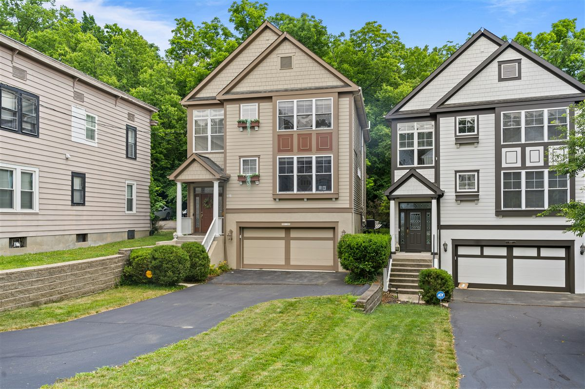
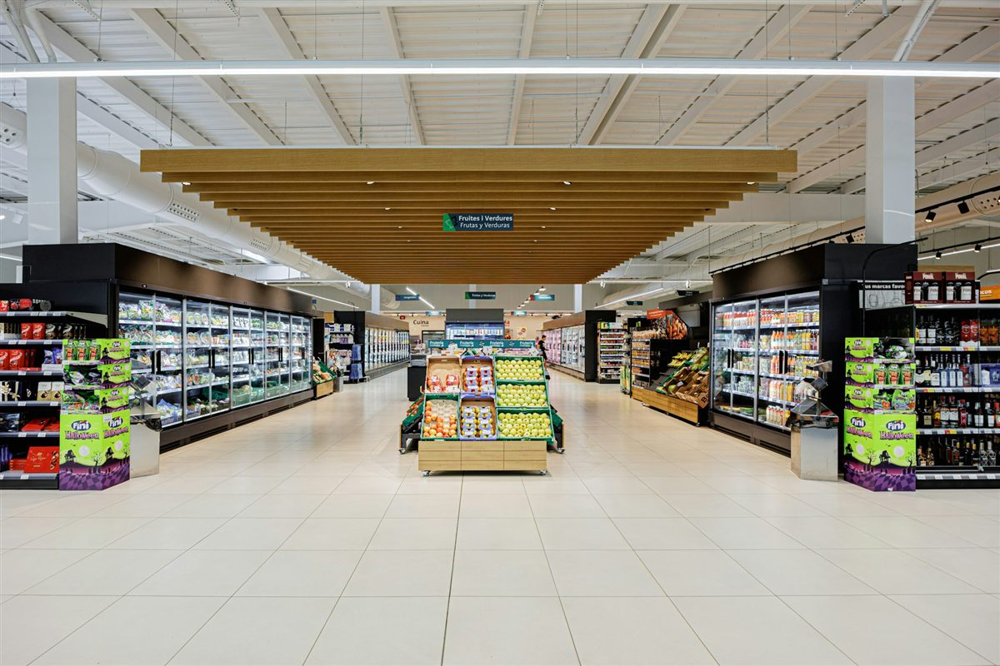

About me
I'm an MSc Data Science graduate (University of Sunderland) motivated by turning
experimental work into practical solutions. I care about clean pipelines, fair
evaluation, and results that are accessible and actionable for non-specialists.
I'm open to graduate Data Scientist / Data Analyst roles in the UK, where data
drives the decisions — visa sponsorship available. Currently sharpening my skills in
scikit-learn model evaluation and feature engineering.

Regression pipeline on the Ames Housing dataset (1,460 homes, 79 features) using a
scikit-learn ColumnTransformer for leakage-free transforms. A Gradient Boosting model
reached ~£17k MAE and 88% R².
Stack: Python, scikit-learn, Pandas, Gradient Boosting.
Explored 891 passenger records, handling missing Age (20%) and Cabin (77%) values.
Key finding: women in first class survived at 97% vs 13% for men in third class.
Stack: Python, Pandas, Matplotlib, Seaborn.

Analysed 8,399 retail transactions across 21 variables. The West region led with
£3.6M in sales while Nunavut trailed at £116K.
Stack: Python, Pandas, Matplotlib.
Built a SQLite patient database and answered five business questions — including the
most common condition (Diabetes, 2 of 5 patients) and average patient age (44).
Stack: SQL, SQLite, Python, Pandas, Jupyter.
Desktop GUI that fetches live data from the OpenWeatherMap API, handles HTTP error
codes gracefully and manages credentials via a .env file.
Stack: Python, PyQt5, REST API, python-dotenv.